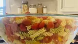

Back
Pasta Salad Recipe

Description
This pasta salad with pepperoni, tomatoes, and provolone cheese
is the best I've ever eaten, and people request it frequently.
It's a very easy, light-tasting side dish for a picnic or dinner.
Ingredients
- (16 ounce) package fusilli (spiral) pasta
- 3 cups cherry tomatoes, halved
- pound provolone cheese, cubed
- pound salami, cubed
- pound sliced pepperoni, cut in half
- large green bell pepper, cut into 1 inch pieces
- (10 ounce) can black olives, drained
- (4 ounce) jar pimentos, drained
- (8 ounce) bottle Italian salad dressing
Steps
- Gather all ingredients.
- Bring a large pot of lightly salted water to a boil.
Cook fusilli in the boiling water, stirring occasionally,
until tender yet firm to the bite, about 12 minutes. Drain.
- Combine fusilli with tomatoes, cheese, salami, pepperoni, green pepper, olives,
and pimentos in a large bowl.
- Pour in salad dressing; toss to coat.
- Enjoy